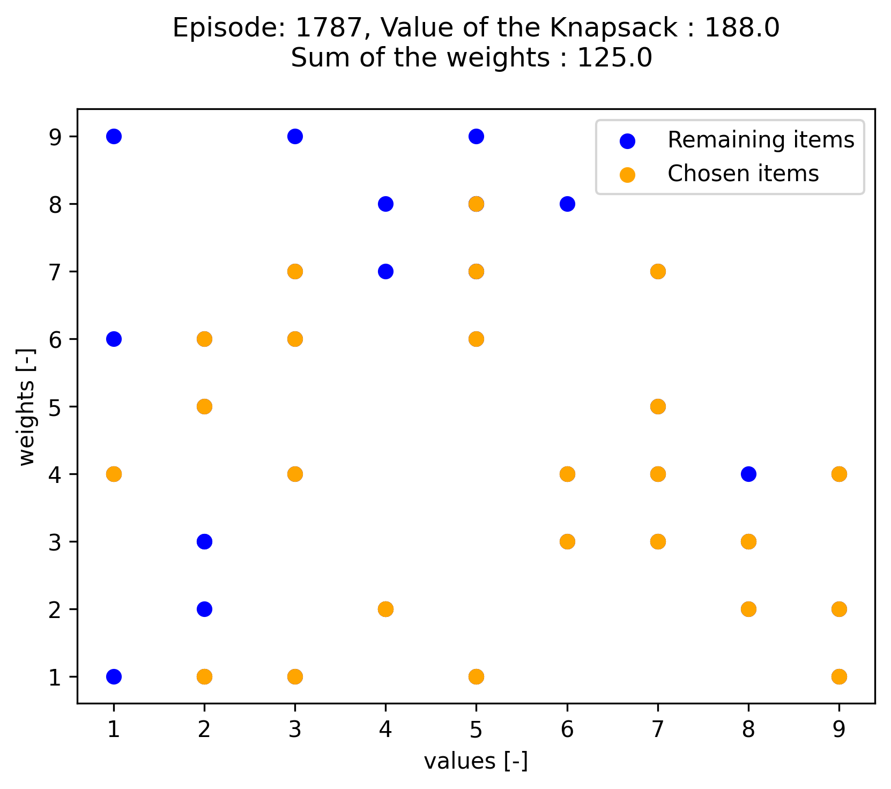
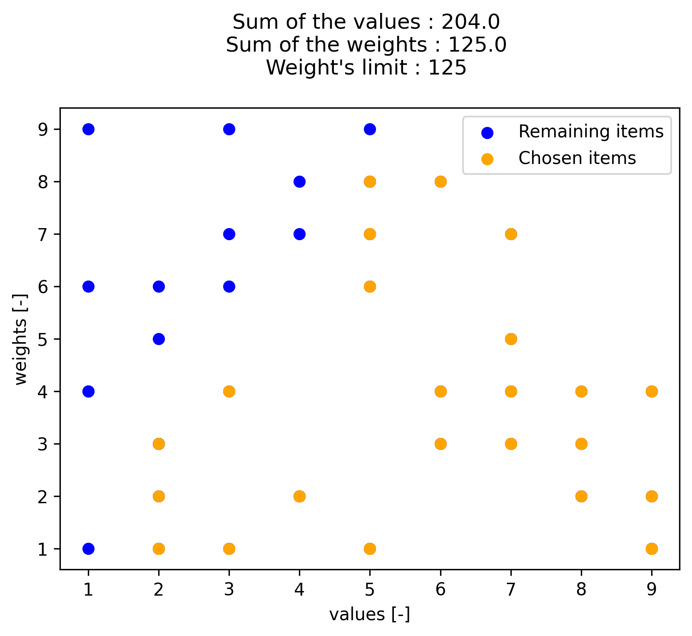

10. Example 10: Knapsack Problem¶
Example of solving the classical discrete optimization problem “Knapsack Problem” (KP) using NEORL with state-of-the-art reinforcement learning algorithms to demonstrate compatibility with discrete space.
10.1. Summary¶
Algorithm: PPO,A2C, ACKTR, DQN, ACER
Type: Discrete/Combinatorial, Single Objective, Constrained
Field: Computational mathematics
10.2. Problem Description¶
The Knapsack Problem (KP) is another combinatorial problem that has been studied for decades. It often arises in resource allocation problem, machine scheduling, and asset optimization for instance. It consists in maximizing the value of a set of items placed in a bag limited by the weight capacity \(W\) of the bag. The figure below illustrates the problem. The maximum weight that the bag can contain is 15kg. The optimum set of items is obtained by taking all of them instead of the 12 kg one. A good heuristic is to choose the item with the lowest weight-to-value ratio.

Formally, with \(i = 1,...,n\) items, each characterized by their values and weights \((\nu_i,w_i)\), the problem can be formulated as:
where \(x_i=1\) if the item \(i\) is in the bag, otherwise \(x_i=0\). This is called the 0-1 Knapsack Problem. The constraint characterizes the fact that the capacity of the bag is limited by \(W\), hence the sum of the weights \(\sum_{i=1}^nw_ix_i\) of the items should not exceed \(W\).
10.3. NEORL script¶
#--------------------------------------------------------
# Import Packages
#--------------------------------------------------------
from neorl.benchmarks import KP
from neorl import PPO2, DQN, ACER, ACKTR, A2C
from neorl import MlpPolicy, DQNPolicy
from neorl import RLLogger
import matplotlib
matplotlib.use('Agg')
import matplotlib.pyplot as plt
import pandas as pd
import numpy as np
import sys
#--------------------------------------------------------
# KP Data
#--------------------------------------------------------
def KP_Data(n_objects):
""""
Function provides initial data to construct a Knapsack problem enviroment
:param n_objects: (int) number of objects, choose either 50 or 100
:return: obj_list (list), optimum_knapsack (list), episode_length (int), weight_capacity (int)
"""
if n_objects == 50:
#---50 objects
obj_list = [[3,4],[8,4],[4,2],[9,4],[5,9],[3,6],[3,1],[9,2],[8,3],[6,8],[9,4],[4,2],[4,7],[5,1],[6,4],[5,8],[2,1],[5,7],[2,5],[7,4],\
[6,3],[8,2],[7,7],[4,8],[5,8],[2,1],[3,7],[7,4],[9,1],[1,4],[2,2],[6,4],[7,3],[2,6],[7,3],[9,1],[1,1],[1,9],[2,3],[5,8],[5,1],[3,9],\
[5,6],[5,7],[4,2],[2,3],[1,4],[8,3],[7,5],[1,6]]
#optimal solution for comparison
optimum_knapsack = [1,2,3,4,7,8,9,10,11,12,14,15,16,17,18,20,21,22,23,25,26,28,29,31,32,33,35,36,39,41,43,44,45,48,49]
#episode length
episode_length = 2
weight_capacity = 125
elif n_objects == 100:
#---100 objects
obj_list = [[1,4],[9,5],[9,7],[6,8],[3,7],[8,4],[8,6],[2,1],[2,6],[9,7],[8,2],[6,6],[6,9],[6,7],[4,4],[7,8],[1,9],[1,3],[5,3],[8,1],\
[5,7],[8,6],[2,8],[3,5],[3,8],[4,3],[8,2],[6,7],[4,9],[3,5],[9,1],[9,3],[5,6],[2,2],[2,1],[5,9],[6,2],[1,3],[8,3],[8,8],[3,8],[4,6],\
[4,7],[9,7],[9,4],[8,8],[2,7],[4,4],[1,2],[3,4],[8,8],[6,9],[4,7],[6,8],[8,7],[4,8],[7,9],[5,9],[8,8],[5,4],[2,2],[4,9],[1,4],[1,8],\
[8,6],[4,5],[9,1],[3,1],[6,2],[7,1],[1,6],[1,7],[9,7],[7,5],[7,1],[5,6],[3,5],[8,8],[8,9],[2,9],[3,1],[5,9],[7,8],[4,3],[2,8],[8,4],\
[9,5],[6,7],[8,2],[3,5],[2,6],[3,2],[9,7],[1,1],[6,7],[7,4],[6,4],[7,6],[6,4],[3,2]]
#optimal solution for comparison
optimum_knapsack = [2,3,6,7,8,10,11,12,14,15,16,19,20,22,26,27,28,31,32,34,35,37,39,40,44,45,46,48,51,55,59,60,61,65,66,67,68,69,\
70,73,74,75,78,79,81,83,84,86,87,89,92,93,94,96,97,98,99,100]
#episode length
episode_length = 2
weight_capacity= 250
else:
raise ValueError('--error: n_objects is not defined, either choose 50 or 100')
return obj_list, optimum_knapsack, episode_length, weight_capacity
#--------------------------------------------------------
# User Parameters for RL Optimisation
#--------------------------------------------------------
try:
total_steps=int(sys.argv[1]) #get time steps as external argument (for quick testing)
except:
total_steps=8000 #or use default total time steps to run all optimizers
n_steps=12 #update frequency for A2C, ACKTR, PPO
n_objects=50 #number of objects: choose 50 or 100
n_sum_steps=10 #this is for logging and averaging purposes
#---get some data to initialize the enviroment---
obj_list, optimum_knapsack, episode_length, weight_capacity=KP_Data(n_objects=n_objects)
#--------------------------------------------------------
# DQN
#--------------------------------------------------------
#create an enviroment object from the class
env=KP(obj_list=obj_list, optimum_knapsack=optimum_knapsack,
episode_length=episode_length, weight_capacity=weight_capacity, method = 'dqn')
#create a callback function to log data
cb_dqn=RLLogger(check_freq=1)
#To activate logger plotter, add following arguments to cb_dqn:
#plot_freq = 50,n_avg_steps=10,pngname='DQN-reward'
#Also applicable to ACER.
#create a RL object based on the env object
dqn = DQN(DQNPolicy, env=env, seed=1)
#optimise the enviroment class
dqn.learn(total_timesteps=total_steps*n_sum_steps, callback=cb_dqn)
#--------------------------------------------------------
# ACER
#--------------------------------------------------------
env=KP(obj_list=obj_list, optimum_knapsack=optimum_knapsack,
episode_length=episode_length, weight_capacity=weight_capacity, method = 'acer')
cb_acer=RLLogger(check_freq=1)
acer = ACER(MlpPolicy, env=env, seed=1)
acer.learn(total_timesteps=total_steps*n_sum_steps, callback=cb_acer)
#--------------------------------------------------------
# PPO
#--------------------------------------------------------
env=KP(obj_list=obj_list, optimum_knapsack=optimum_knapsack,
episode_length=episode_length, weight_capacity=weight_capacity, method = 'ppo')
cb_ppo=RLLogger(check_freq=1)
#To activate logger plotter, add following arguments to cb_ppo:
#plot_freq = 1, n_avg_steps=10, pngname='PPO-reward'
#Also applicable to A2C, ACKTR.
ppo = PPO2(MlpPolicy, env=env, n_steps=n_steps, seed = 1)
ppo.learn(total_timesteps=total_steps, callback=cb_ppo)
#--------------------------------------------------------
# ACKTR
#--------------------------------------------------------
env=KP(obj_list=obj_list, optimum_knapsack=optimum_knapsack,
episode_length=episode_length, weight_capacity=weight_capacity, method = 'acktr')
cb_acktr=RLLogger(check_freq=1)
acktr = ACKTR(MlpPolicy, env=env, n_steps=n_steps, seed = 1)
acktr.learn(total_timesteps=total_steps, callback=cb_acktr)
#--------------------------------------------------------
# A2C
#--------------------------------------------------------
env=KP(obj_list=obj_list, optimum_knapsack=optimum_knapsack,
episode_length=episode_length, weight_capacity=weight_capacity, method = 'a2c')
cb_a2c=RLLogger(check_freq=1)
a2c = A2C(MlpPolicy, env=env, n_steps=n_steps, seed = 1)
a2c.learn(total_timesteps=total_steps, callback=cb_a2c)
#--------------------------------
#Summary Results
#--------------------------------
print('--------------- DQN results ---------------')
print('The best value of x found:', cb_dqn.xbest)
print('The best value of y found:', cb_dqn.rbest)
print('--------------- ACER results ---------------')
print('The best value of x found:', cb_acer.xbest)
print('The best value of y found:', cb_acer.rbest)
print('--------------- PPO results ---------------')
print('The best value of x found:', cb_ppo.xbest)
print('The best value of y found:', cb_ppo.rbest)
print('--------------- ACKTR results ---------------')
print('The best value of x found:', cb_acktr.xbest)
print('The best value of y found:', cb_acktr.rbest)
print('--------------- A2C results ---------------')
print('The best value of x found:', cb_a2c.xbest)
print('The best value of y found:', cb_a2c.rbest)
#--------------------------------
#Summary Plots
#--------------------------------
log_dqn = pd.DataFrame(cb_dqn.r_hist).cummax(axis = 0).values
log_acer = pd.DataFrame(cb_acer.r_hist).cummax(axis = 0).values
log_ppo = pd.DataFrame(cb_ppo.r_hist).cummax(axis = 0).values
log_acktr = pd.DataFrame(cb_acktr.r_hist).cummax(axis = 0).values
log_a2c = pd.DataFrame(cb_a2c.r_hist).cummax(axis = 0).values
def update_log_dqn_acer(log, n_sum_steps):
# This is a helper function to convert right logger for DQN/ACER to
# to be equivalent to other algs.
#Inputs:
#log: orginal DQN/ACER logger
#n_sum_steps: number of steps to group and sum.
#Outputs:
#updated_log: the converted log for DQN/ACER
data=np.transpose(log.tolist())[0]
size=len(data)
updated_log = [sum(data[i:i+n_sum_steps])/n_sum_steps for i in range(0,size,n_sum_steps)]
updated_log.pop(0); updated_log.pop(0); updated_log.pop(-1) #remove extraneous entries
return updated_log
#update the DQN/ACER loggers
log_dqn=update_log_dqn_acer(log_dqn, n_sum_steps)
log_acer=update_log_dqn_acer(log_acer, n_sum_steps)
#plots
plt.figure()
plt.plot(log_dqn, label = "DQN")
plt.plot(log_acer, label = "ACER")
plt.plot(log_ppo, label = "PPO")
plt.plot(log_acktr, label = "ACKTR")
plt.plot(log_a2c, label = "A2C")
plt.xlabel('Step')
plt.ylabel('Best Knapsack value')
plt.legend()
plt.savefig("kp_history.png",format='png' ,dpi=300, bbox_inches="tight")
plt.show()
10.4. Results¶
A summary of the results is shown below for the case of 50 items/objects. First, all five reinforcement algorithms are compared in terms of maximizing the sum of item weights. The fitness convergence shows that PPO and ACKTR are the best algorithms in this case, with PPO slightly achieved a better fitness. Therefore, we will limit the reported results to PPO.

The maximum value of the Knapsack tour cost found by PPO is 188, which is fairly close to the optimal sum of item values of 204. The PPO Knapsack is below
{kind=link}
while here is the target optimal Knapsack
{kind=link}
And here are the final results of all algorithms:
--------------- DQN results ---------------
The best value of x found: ['7', '8', '9', '10', '11', '12', '13', '14', '15', '16', '17', '18', '19', '20', '21', '22', '23', '24', '25', '26', '27', '28', '29', '33', '45', '36', '48', '35', '6', '37', '4', '30', '41']
The best value of y found: 175.0
--------------- ACER results ---------------
The best value of x found: ['41', '36', '10', '2', '6', '22', '13', '7', '15', '48', '19', '8', '21', '17', '49', '3', '11', '4', '23', '26', '25', '1', '28', '50', '9', '20', '24', '33', '29', '32', '31', '14', '43', '27']
The best value of y found: 186.0
--------------- PPO results ---------------
The best value of x found: ['11', '28', '12', '4', '30', '47', '33', '9', '17', '29', '49', '26', '41', '43', '6', '3', '45', '22', '35', '8', '48', '15', '36', '44', '23', '7', '32', '21', '34', '1', '25', '27', '19', '20', '14', '40']
The best value of y found: 188.0
--------------- ACKTR results ---------------
The best value of x found: ['29', '12', '31', '4', '7', '36', '39', '24', '10', '40', '15', '22', '33', '48', '9', '19', '32', '45', '34', '14', '8', '25', '2', '11', '46', '28', '23', '3', '49',
'26', '21', '35', '16', '38']
The best value of y found: 187.0
--------------- A2C results ---------------
The best value of x found: ['16', '28', '15', '4', '32', '23', '20', '1', '43', '8', '36', '3', '35', '46', '2', '22', '21', '41', '18', '7', '24', '38', '40', '11', '12', '29', '44', '49', '48', '37', '33', '9']
The best value of y found: 181.0